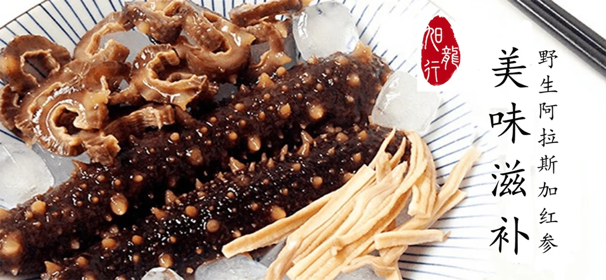
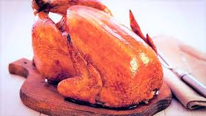
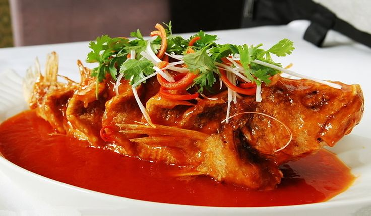

Shandong cuisine, also known as Lu cuisine, originating from the Shandong Province, this cuisine is known for its hearty flavors, bold seasonings, and an emphasis on fresh and natural ingredients. It reflects the region's agricultural abundance and proximity to the coast.
Seafood, grains, and vegetables are central to this cuisine, with cooking techniques including braising, frying, roasting, and boiling.
Braised Sea Cucumber with Scallions (葱烧海参): A luxurious dish showcasing tender sea cucumber in a flavorful scallion sauce.
Dezhou Braised Chicken (德州扒鸡): A famous dish with chicken braised until incredibly tender, infused with spices and soy sauce.
Sweet and Sour Carp (糖醋鲤鱼): A signature Shandong dish where carp is beautifully cooked and coated in a tangy sweet-and-sour sauce.
  